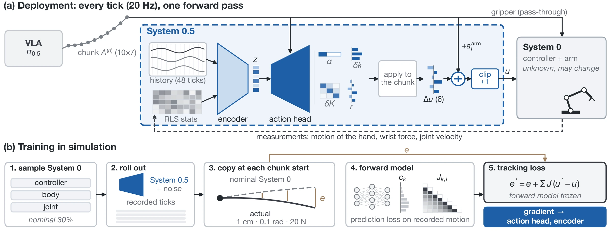

Learning to Restore Nominal VLA Execution Under Unknown Low-Level Changes
A VLA policy learns how its chunks move the arm under the System 0 that recorded its demonstrations; when controllers, gains or joints change, the same chunks move the arm elsewhere. Following the command is not the fix. System 0.5 identifies the current System 0 from its own history and restores each chunk’s nominal execution.
 POSTECH, DI Lab
POSTECH, DI Lab
1Department of Computer Science and Engineering ·
2Graduate School of Artificial Intelligence
POSTECH, Pohang, South Korea · Correspondence: Hwanjo Yu
Animations marked schematic illustrate the mechanism. Every number on this page comes from the manuscript, and the LIBERO replay and the UR5e clips are recorded data.
vs 56.6% best reported
vs 61.7% best reported
vs 79.4% best baseline
from 9.0 mm without a layer
The Robot Runs a Different System 0
From its demonstrations, a policy learns how far, how fast and in which direction a command moves the arm under the nominal System 0, the one that recorded them. When the gain doubles, the same chunk moves the hand farther, and the next camera image shows a scene that no demonstration contains.
Recorded data, not a sketch. The same π0.5 chunks of one LIBERO-Spatial episode replayed open loop in simulation, without a layer, under the nominal System 0 and four changes from the controller, body and joint families (paper Fig. 1). One tick is 50 ms; a new chunk starts every five ticks. Top view of the hand, played at one third of real speed.
Not the Command, the Learned Motion
A remedy that covers every change is to make the arm follow the command. But under LIBERO's own controller the hand moves only 0.22 of each commanded step per tick, and the demonstrations recorded this partial motion. Following the command moves the hand about four times as far per tick, into states the policy never learned to act from.
Schematic of one chunk with the measured nominal ratio of 0.22. The dashed arrows are the steps the ten commands ask for.
Change only the training target
Same layer, same data, same losses. Success over eight changes outside the training distribution (40 episodes each):
Dashed line: π0.5 without a layer (pass-through). Trained toward the command, the layer falls far below doing nothing. Values from the paper's ablation (Fig. 3).
The nominal execution restarts at every chunk
The nominal execution of a chunk is the trajectory the nominal System 0 would produce from the state where the chunk actually starts. The error one chunk leaves is not carried into the next, so the layer never chases a target the arm has already left behind. A reference fixed at the start of the episode keeps growing instead.
Identify System 0, Then Correct
System 0.5 sits between a frozen VLA and System 0. Once per 50 ms tick it reads its own history of commands and measured motion, summarizes the current System 0 as a vector z without seeing its parameters, and corrects the arm command. One tick takes about 1 ms on one CPU thread.
How a history reveals a delay and a gain
For each lag d = 0…4, recursive least squares (RLS) fits a map Md from the command sent d ticks ago to the current motion. A map that is small at short lags and large at lag d indicates a command delay of d ticks; its size indicates the gain. Change the hidden System 0 below and watch the live estimator find it.
Live toy simulation in your browser: random commands drive a one-dimensional System 0 with the delay and gain you set, plus measurement noise. The layer's real estimator uses the same idea on six-dimensional commands with a forgetting time of 20 s; the encoder then reads these statistics together with the last 48 entries (2.4 s).
A Correction With Structure
From z, the head outputs four terms. A lead mix blends in actions the chunk plans up to four ticks ahead, for a delayed System 0. A 3×3 matrix rescales and rotates the translation commands, three factors rescale the rotation commands, and a residual adds what remains.
An unstructured head tracks and succeeds as well as this one; the structure makes the correction readable. The learned lead mix advances the plan by 0.1 to 1.9 ticks for command delays of one to four ticks.
Trained Through a Forward Model
In simulation, training copies the full simulator state at each chunk's start and runs the chunk under the nominal System 0 to record its nominal execution. A learned forward model predicts motion from commands; its sensitivity J turns any other command into the change of motion it would have caused, so the layer learns from gradients of a counterfactual error.
A command delay of L ticks appears as Jk,i ≈ 0 for k − i < L. Only differences of two predictions enter the loss, so the offsets ck cancel and the layer is trained through J alone.
The loss per tick is ρ(‖ep‖²) + ρ(‖eR‖²) + ρ((eF)²) with ρ(s) = log(1+s), on position (per 1 cm), orientation (per 0.1 rad) and excess contact force (per 20 N). Training replays recorded π0.5 chunks and never queries the VLA.

Above the Best Reported Success
Both benchmarks reimplemented with our 40 LIBERO tasks and the public π0.5 checkpoint. Their fault types appear in our training families; their parameter combinations, scenarios and initial states do not. Gain over base: 2.8× that of SC-VLA and 2.4× that of J-PARC.
Our episodes per cell: 800 (System 0.5: 2,400) on RoboStress, 1,400 (200 per joint) on J-PARC. Under range limits and the lock, where no command can produce part of the motion, System 0.5 matches J-PARC within one point.
Eight changes whose form never appears in training
A curl force field, a joint-space impedance controller, quantized commands and five more, on the ten LIBERO-Spatial tasks. Each strength was fixed before training. System 0.5 outperforms pass-through and all four baselines after Holm's correction.
Mean success over 8 changes × 40 episodes. The run shown, fixed before testing, is the lowest of ten training seeds (84.7 to 90.6%), all above the best baseline.
Lower tracking error, higher success
On the eight changes, across six layer variants, pass-through and the four baselines, a lower mean tracking error against the nominal execution comes with higher success in the same episodes.
Rerun that records the tracking error, 8 changes × 40 episodes per point. Hover or tap a point for its name.
UR5e: 9.0 → 1.2 mm
π0.5 fine-tuned on 29 demonstrations sends one command every 0.29 s. Without a layer, the robot executes only 44% of each commanded step, because each pose it receives is the step added to a pose read 0.26 s earlier. A second layer, trained with the same losses on a kinematic simulator of this arm, runs at unit gain against an online gain calibrator and no layer, in rotating order at 30 toy placements.
Hand distance from the nominal execution, averaged over the chunks in free motion. One-sided paired Wilcoxon test fixed before the experiment, p = 9×10−10; against the calibrator, two-sided p = 4×10−6.
Trials completed within each time, of 30 per method; 120 s limit. Within 60 s, unit gain completes none, the calibrator 15 and System 0.5 18. At 120 s: 16, 16 and 21. The operator labeled each trial; all 90 labels match the logged gripper opening in the release region.
Same placement, three methods, one clock
Each clip shows the three trials at one placement side by side from the base camera, at 4× real time on a shared clock. A trial that ends freezes under its outcome. Click a clip to enlarge.
System 0.5 at a Glance
What is System 0.5?
System 0.5 is a learned layer between a frozen vision-language-action (VLA) policy and System 0, the controller and the robot body. Once per 50 ms tick it corrects the arm part of each command so that every action chunk moves the arm as it would under the System 0 that recorded the policy's demonstrations.
What is the nominal execution of a chunk?
The nominal execution is the trajectory that the nominal System 0, the one under which the demonstrations were recorded, would produce from the state where the chunk actually starts. It restarts from the actual state at every chunk, so the error one chunk leaves is not carried into the next.
Why not make the arm follow the command?
Under LIBERO's own controller the hand moves about 0.22 of each commanded step per tick, and the policy learned this partial motion. Trained toward the command instead of the nominal execution, the same layer succeeds in 25.6% of episodes under changes outside its training distribution, against 76.9% for the policy without a layer.
Does System 0.5 retrain the VLA or need the parameters of System 0?
No. The VLA stays frozen, and the layer never receives the parameters of System 0. It identifies the current System 0 from its own history of commands and measured motion, using recursive least-squares statistics and an encoder that summarizes them as a 64-dimensional vector.
How is System 0.5 trained?
In simulation, by gradients through a learned forward model and without reinforcement learning. Training copies the simulator state at each chunk's start to record the nominal execution, and the forward model's sensitivity turns other commands into the change of motion they would cause. Training replays recorded π0.5 chunks and never queries the VLA. At deployment one tick takes about 1 ms on one CPU thread.
What results does System 0.5 achieve?
With π0.5 on LIBERO, System 0.5 reaches 72.7% success on RoboStress against 56.6% best reported, and 68.1% on the J-PARC joint-fault benchmark against 61.7%. Over eight System 0 changes outside its training distribution it reaches 84.7%, above all four baselines (best 79.4%). On a real UR5e it lowers the tracking error from 9.0 to 1.2 mm at every one of 30 placements and completes 21 of 30 trials against 16 without a layer.
What are the limits of System 0.5?
The layer assumes that its own measurements are not delayed; on the UR5e, whose measurements are late, the second layer is trained with the measurement lag varied. On the UR5e it lowers the tracking error at every one of 30 placements and completes 21 of 30 trials against 16 without a layer (one-sided sign test p = 0.063); the change on that arm shortens every step without changing its direction, so its measured cost is time. Under joint range limits and a joint lock, where no command can produce part of the motion, System 0.5 matches J-PARC within one point.
Are the paper and code available?
The paper is under review and the code will be released upon publication. This page shows the method, the results and all 90 UR5e hardware trials.
Abstract
A vision-language-action (VLA) policy outputs action chunks that System 0 (the controller and the robot body) turns into motion. System 0 rarely stays as it was when the demonstrations were recorded. Robots run under other controllers and gains, and joint faults can halve the success of π0.5. A remedy that covers every change is to make the arm follow the command. In LIBERO, however, the demonstrations' System 0 moves the hand about a fifth of each commanded displacement per tick, and the policy learned this motion, not the command. We present System 0.5, a layer between a frozen VLA and System 0. The layer recovers success by learning to restore each chunk's nominal execution, the motion the demonstrations' System 0 would produce from where the chunk starts. The layer identifies the current System 0 from its own history of commands and measured motion. It is trained by gradients through a learned forward model, without reinforcement learning. With π0.5 on LIBERO, System 0.5 exceeds the best reported success on two joint-fault benchmarks, reaching 72.7% against 56.6% on RoboStress. On average over eight changes outside its training distribution, it outperforms all four baselines. On a real UR5e, a second layer trained with the same losses lowers the tracking error from 9.0 to 1.2 mm at every one of 30 placements and completes 21 of the 30 trials against 16 without a layer.
Scope. Simulation tests use the public π0.5 LIBERO checkpoint; the eight changes outside the training distribution run on the ten LIBERO-Spatial tasks. On the UR5e, the change to System 0 shortens every commanded step without changing its direction, and the success difference (21 vs 16 of 30 trials) gives p = 0.063 in the one-sided sign test fixed before the experiment.